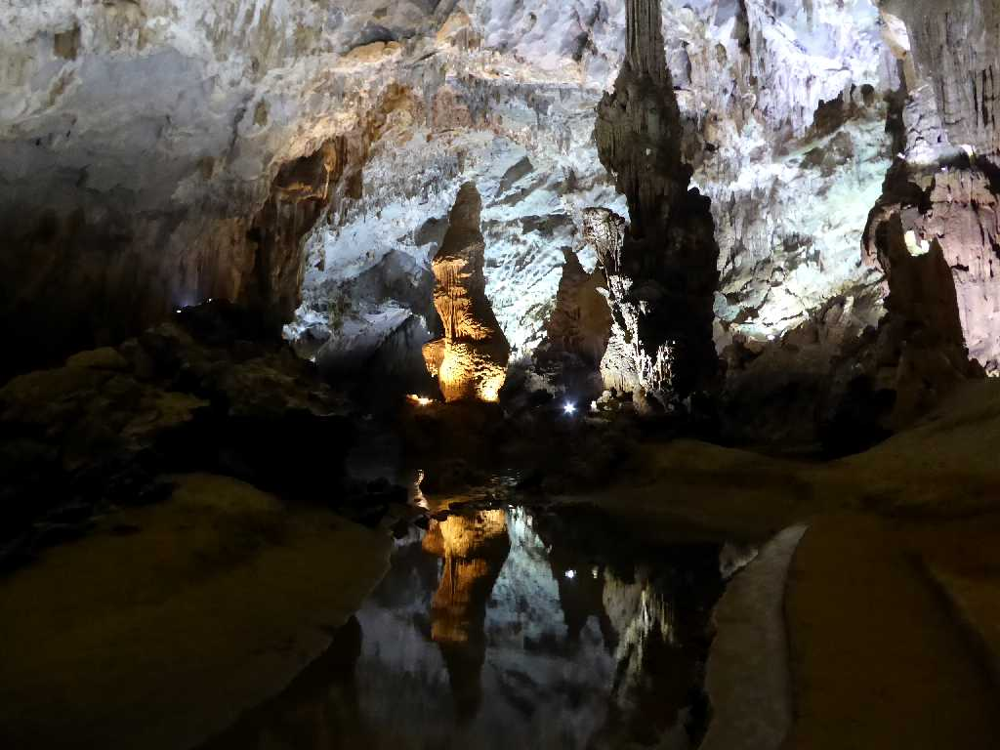
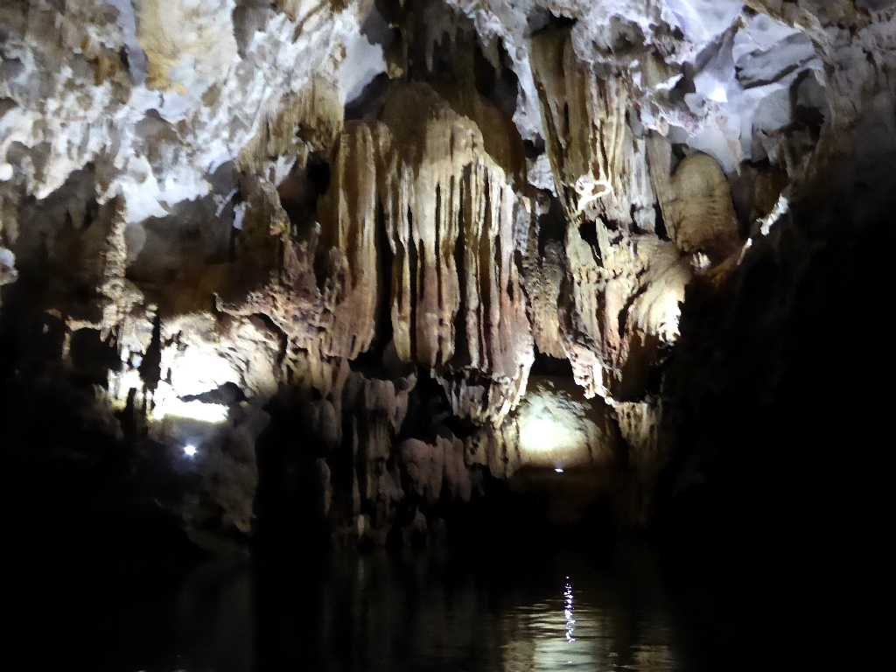
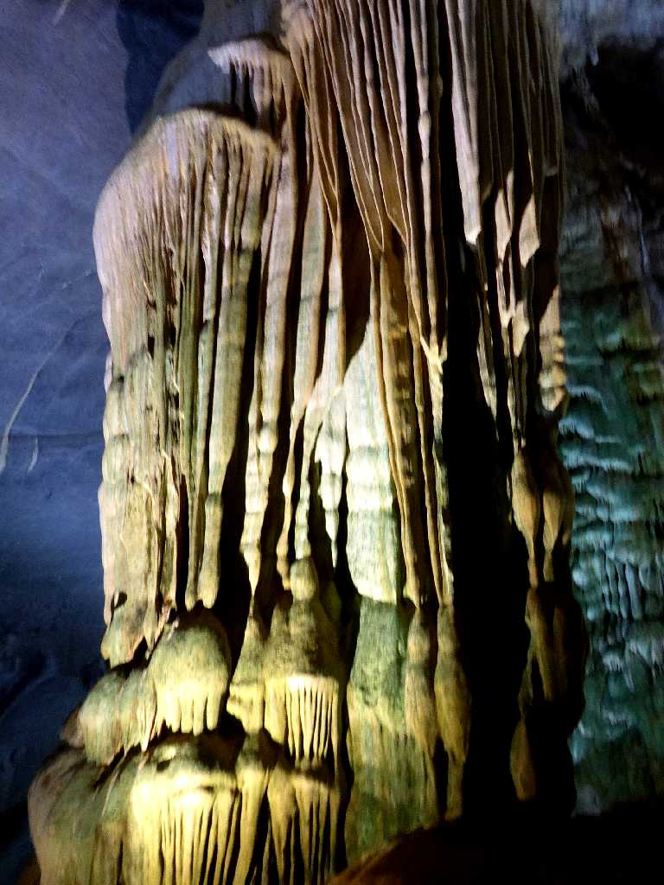
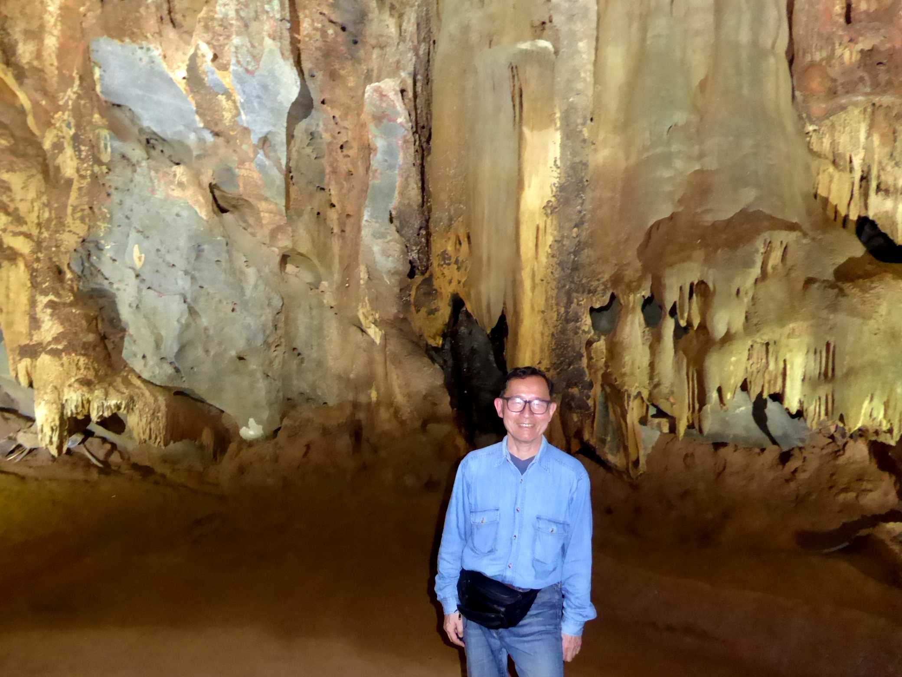
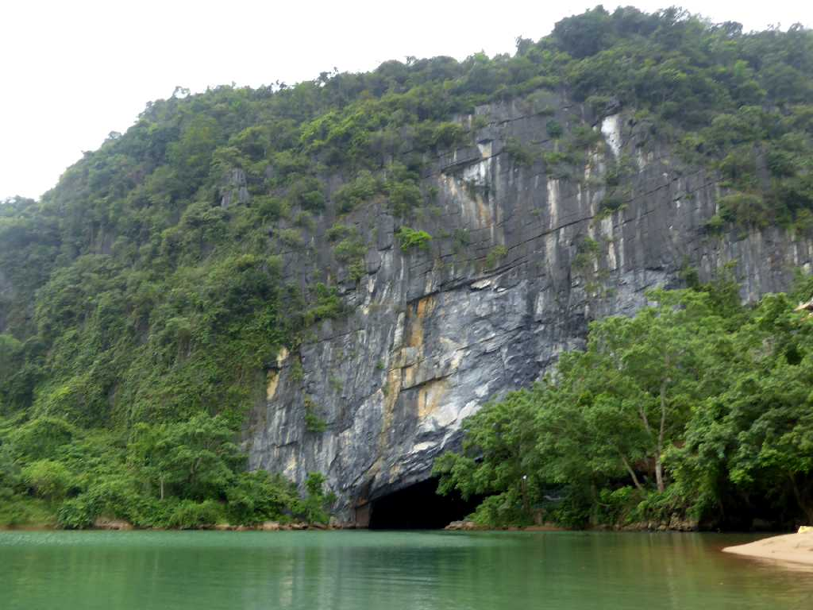

Động Phong Nha (Phong Nha Cave) Vườn quốc gia Phong Nha Kẻ Bàng (Phong Nha Ke Bang National Park)
４億年前にできたアジア最古のカルスト地形のフォンニャケバン国立公園にある美しいフォンニャ洞窟は長さ７,７２９ｍある

Stalagmite Động Phong Nha
フォンニャケバン国立公園には３００ほどの洞窟があり美しく幻想的な世界を見せてくれる

Stalactite Động Phong Nha

March 28 2018 Động Phong Nha

Entrance Động Phong Nha